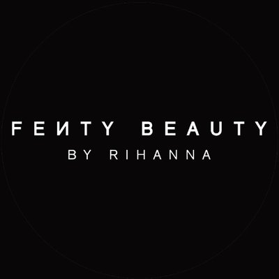
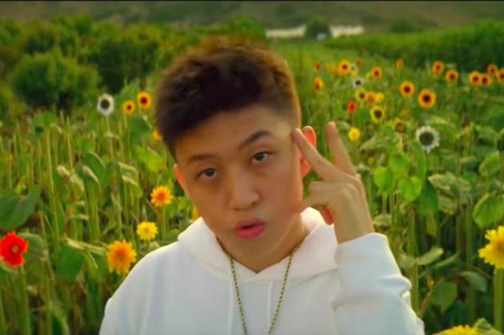

Nelly, que saltó a la fama en la década de los 2000 con canciones como "Ride with me" o "Hot In Here", fué arrestado durante su tour colaborando con diversos raperos.
La presunta víctima denunció los hechos a la policía horas despues del suceso, afirma haber sido atacada en el bus oficial del tour. Nelly, que ya ha sido sujeto a sentencias por tráfico de drogas, negó los hechos a través de su abogado, que afirmó que se trataba de simples fabricaciones para desprestigiar al artista.
------------------------------------------------------------------------------------------------- Fenty INC: Rihanna Emprendedora
, Los Ángeles

Rihanna ha sacado una exitosa línea de cosméticos que ha levantado el plagio y las envidia de otras marcas.
Pero no será lo último que Rihanna trama, se han registrado en california marcas de vinos, lícores e incluso tabaco. La nativa de Barbados ya se adentró exitosamente en el mundo de la moda, estamos ante un talento e iniciativas propias, o las maquinaciones de un buen contable?
------------------------------------------------------------------------------------------------- 888Rising, rap en asia
, Los Ángeles

Desde los Killer Whale en Corea del Sur hasta los Higher Brothers de China, 888 recluta talento en todas partes.
Pero el rap no lo es todo, el pop asiático está evolucionando de manera experimental, parece como si todos los géneros musicales evolucionasen de manera paralela al resto del mundo. Hoy examinamos bajo lupa estos sonidos frescos, y lo que suponen para la industria en el futuro.
------------------------------------------------------------------------------------------------- Video de la semana: Agnes - Glass Animals
, Talavera
El videoclip de esta semana fue publicado hace dos meses en la cuenta de la banda.
El cantante principal de Glass Animals se metió en una camara de centrifugación como la utilizan los astronautas, dando 18 vueltas con breves descansos para emular la emoción exacta que quería transmitir en su canción favorita hasta la fecha. Agnes cuenta una historia muy simple, pero efectiva.